2024 hat Hendrik Beierstettel in den Fränkischen Nachrichten eine Serie
über historische Grenzsteine in Tauberbischofsheim und Umgebung veröffentlicht. Die Artikel
erklären, wie Grenzen früher markiert wurden, und erzählen die Geschichten einzelner Steine –
vom rätselhaften „1308er“ über den Eckstein von 1474 bis zu den Hoheitssäulen im Irtenberger
Forst. Hier stehen sie in der Fassung des Autors.
Die Artikel geben den Kenntnisstand von 2024 wieder. Zahlen können deshalb
von den heutigen Angaben dieser Website abweichen. Die Rechte an den Abbildungen liegen bei den
jeweils genannten Archiven und Fotografen.
Grenzsteine sind wenig beachtete Kleindenkmale von großer Bedeutung
Von Hendrik Beierstettel · erschienen in den Fränkischen Nachrichten am 27. August 2024 · Folge 1 der Serie
Schon seit mehr als 3000 Jahren beschäftigen sich die Menschen mit Grenzen, deren Beschreibung und Kennzeichnung. Älteste Grenzverläufe orientierten sich oft an natürlichen Grenzen wie Flussläufen, Gräben oder Höhenzügen. Ergänzt wurden diese bald durch von Menschenhand geschaffene Linien wie Dämme, Hecken, Wege oder Pflugfurchen. Als gut erkennbare, auffallende Grenzmale wurden auch seit jeher große Findlinge, also Felsen oder Steinblöcke (Lagersteine) genutzt. Spätestens im Frühmittelalter begann man auch in Mitteleuropa schließlich mit einer systematischeren Markierung der Grenzen: In herausragende oder alleinstehende Bäume auf der Grenzlinie wurden Zeichen eingekerbt. Solche Bäume nannte man Malbäume oder Lach-/Lochbäume.
Ungefähr ab dem 13. Jhd. fing man dann an, nicht nur vor Ort vorhandene Marken zu nutzen, sondern diese durch das Setzen von Pfählen oder Steinen zu ergänzen. Diese ersten gesetzten Grenzsteine waren noch unbearbeitet; man nutzte in der näheren Umgebung gefundener Steine mit besonderer, länglicher Form. Ein solcher alter Grenzstein steht heute noch auf dem Bettingberg zwischen Trennfeld und Kreuzwertheim. Dieser Stein wird in einer Markungsbeschreibung aus dem Jahre 1696 „Judenstein“ genannt (StA Wt. F-Rep.32 Nr. 58). Er steht in der Nähe eines alten Fernwegs, der bei Urphar durch eine Furt den Main querte. Die Gemarkungsgrenze war hier auch eine Zollgrenze. Juden mussten damals einen Leibzoll (Judenzoll) zahlen. Womöglich gab es hier einen unbewachten Übergang, wo dieser Zoll umgangen werden konnte. Eventuell war es aber auch genau umgekehrt und die jüdischen Reisenden wurden hier zur Kasse gebeten.
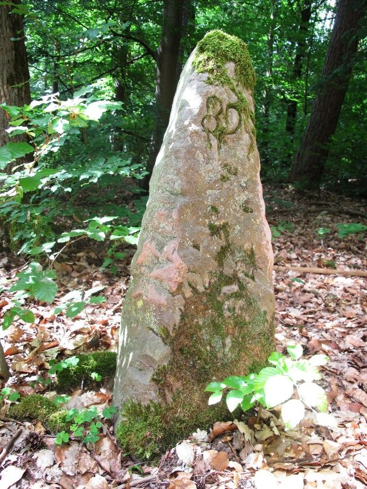
Der „Judenstein“ auf dem Bettingberg. Die eingehauene Grenzstein-Nr. 89 stammt aus jüngerer Zeit. Foto: Hendrik Beierstettel
Im Laufe des 14. und 15. Jhd. setzte vornehmlich an Hoheits- und Rechtsgrenzen die Vermarkung mit bearbeiteten Grenzsteinen ein. Sie wurden noch spärlich und in relativ großen Abständen zueinander gesetzt, und zwar besonders als Ecksteine, also dort, wo die Grenze einen größeren Richtungswechsel vornahm. Die ältesten behauenen Grenzsteine in unserer Gegend sind aus Buntsandstein, da sich dieser gut bearbeiten lässt. Auf dem Kopf des Steins wurde ein Kreuz, später dann die Laufrichtung der Grenze eingekerbt. Auf den beiden breiten Seitenflächen brachte man die oft sehr aufwändig gestalteten Kennzeichen für den jeweiligen Herrschafts- bzw. Gemarkungsbereich an. Manche alten Steine tragen auch nur auf einer Seite eine solche Kennung, wohl von der Gemeinde oder Herrschaft, die den Stein finanziert und errichtet hatte. Die (Tauber-)Bischofsheimer Gemarkungsgrenzsteine aus dem 15. und 16. Jhd. zeigten auf der der Bischofsheimer Gemarkung zugewandten Seite drei B, die in einem Wappenschild um ein Mainzer Rad angeordnet waren. Häufig wurde auch noch die Jahreszahl der Errichtung eingehauen. Einer der ältesten datierten und noch erhaltenen Bischofsheimer Gemarkungsgrenzsteine steht heute in Tauberbischofsheim im Tauberfränkischen Landschaftsmuseum. Er trägt die Jahreszahl 1493. Die 4 ist dabei noch in der damals üblichen Schreibweise einer „nach unten offenen 8“ geschrieben.
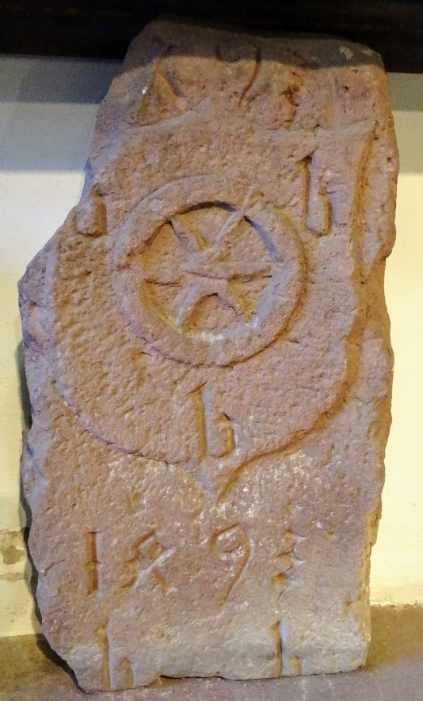
Bischofsheimer Gemarkungsgrenzstein aus dem Jahr 1493 im Tauberfränkischen Landschaftsmuseum. Foto: Hendrik Beierstettel
Warum das Bischofsheimer B dreimal eingehauen wurde, ist nicht ganz klar. Wahrscheinlich hatte es einfach einen praktischen Grund: Wenn ein B beschädigt wurde, blieben immer noch zwei weitere übrig. Der Tauberbischofsheimer Ehrenbürger Hugo Pahl interpretierte die drei B derweil schelmenhaft als Bischemer Bösi Buwe. Im in der Erde befindlichen Teil des Steins wurden die oberirdischen Zeichen -in einfacherer Ausführung- oft nochmals wiederholt. Auch dies war wieder eine Absicherung, falls der obere Teil des Steins beschädigt oder gar abgebrochen sein sollte, die deutlich macht, für wie wichtig die Markierung der Grenze erachtet wurde.
Das Entfernen oder Versetzen von Grenzsteinen wurde hart bestraft. Grenzsteine durften nur von den sogenannten Feld- oder Landschiedern, die auch Siebener genannt werden, beider beteiligten Parteien gemeinsam gesetzt werden. Um ein heimliches Versetzen zu enttarnen, versteckten die Landschieder unter oder neben dem Stein in der Erde kleine Tonscherben mit eingekerbten Zeichen, die Grenzstein-Zeugen genannt werden. Wie die Zeugen genau aussahen, war das Geheimnis der Siebener.
Die Gemarkungsgrenzen wurden von den Landschiedern der jeweils angrenzenden Ortschaften in regelmäßigen Abständen gemeinsam abgelaufen und kontrolliert. Vielerorts fand eine solche Gemarkungsumgehung jährlich, wegen der spärlicheren Vegetation meist im Spätherbst, statt und war ein großes Ereignis: Neben vielen Amtsträgern der Gemeinden sollten auch noch möglichst viele Einwohner mitlaufen, damit sie ihre Grenze kennen. Um sich den Verlauf der Grenze dauerhaft einzuprägen, wurden die mitlaufenden Buben mancherorts energisch auf jeden Grenzstein gesetzt (gestaucht). In größeren Abständen wurden die Gemarkungsumgehungen auch protokolliert. Alle beteiligten Gemeinden erhielten eine Abschrift. Im Tauberbischofsheimer Stadtarchiv finden sich solche Bischofsheimer Grenzgang-Protokolle aus den Jahren 1569, 1580, 1608, 1683, 1700, 1749 und 1872 (Stadtarchiv B3-B8a). Ein weiteres Bischofsheimer Protokoll aus dem Jahr 1724 liegt wegen einer damaligen Grenzstreitigkeit mit dem seinerzeit zu Würzburg gehörenden Impfingen im Staatsarchiv Würzburg (StA Wü Gebr. A Wü IV G 196 III).
Im Anschluss an Grenzbegehungen wurden verschwundene Steine ersetzt und zunehmend auch zusätzliche aufgestellt, jedoch blieben die Abstände zwischen zwei Steinen teilweise immer noch beträchtlich groß. Auf der Tauberbischofsheimer Gemarkungsgrenze mit Großrinderfeld gibt es am Forst einen Abschnitt von fast 1km Länge, auf dem bis Mitte des 19. Jhd. kein einziger Grenzstein zu finden war. Hier zeigte der Waldrand die Grenze an. Ab dem 18. Jhd. wurde die Versteinung der Grenzen systematisiert, die Abstände zwischen zwei Steinen wurden kleiner. Nun wurden auch auf geraden Grenzverläufen in regelmäßigen Abständen Steine, die sogenannten Läufersteine, gesetzt. Der Umfang der Tauberbischofsheimer Gemarkung beträgt ca. 32km, auf denen heute noch ca. 250 historische Grenzsteine zu finden sind.
Mit diesem Artikel startet eine Serie, in der besondere Grenzsteine der Tauberbischofsheimer Gemarkung und Umgebung vorgestellt werden. Der Autor steht als ehrenamtlicher Grenzsteinbeauftragter der Gemeinde Tauberbischofsheim in der Nachfolge der in Baden-Württemberg nicht mehr existierenden Landschieder. Beschädigte, ausgezackerte oder auf Steinlesehaufen oder anderweitig ortsfremd aufgefundene Grenzsteine sollten ihm gemeldet werden (grenzstein@beierstettel.de oder 09341/5113). Er kümmert sich darum, dass sie wieder an ihren rechten Ort gelangen.
Von Hendrik Beierstettel · erschienen in den Fränkischen Nachrichten am 30. August 2024 · Folge 2 der Serie
Der Tauberbischofsheimer Ehrenbürger Hugo Pahl (1912-2005) beschreibt in seinem Heimatbuch „Bischemer Bösi Buwe“ (Selbstverlag, Tauberbischofsheim: FN-Druck 1955) auf Seite 62 einen alten Grenzstein. Auf der Bischofsheimer Seite wären drei B und das Mainzer Rad auf einem Wappenschild zu sehen, auf der Grünsfelder Seite ein G in einem Wappenschild. Beiderseits jedoch sei zudem „gegen alle Zweifel deutlich“ die Jahreszahl 1308 eingemeißelt. Pahl liefert auch Hinweise, wo dieser nun bereits über 700 Jahre alte Grenzstein stehen soll: „Wer ihn finden wollte, müsste halbwegs Dittigheim am Brückenwald vorbei den Daawerdleweg hinaufgehen, bis er auf der Höhe zu den Grünsfelder Tannen gelangt. Von hier aus bedarf es nur noch einiger Schritte rechterhand den Waldrand entlang, vorbei an einem Pflanzgarten, um plötzlich am Eingang zu einem Waldpfad den Gemarkungsstein vor sich zu sehen.“
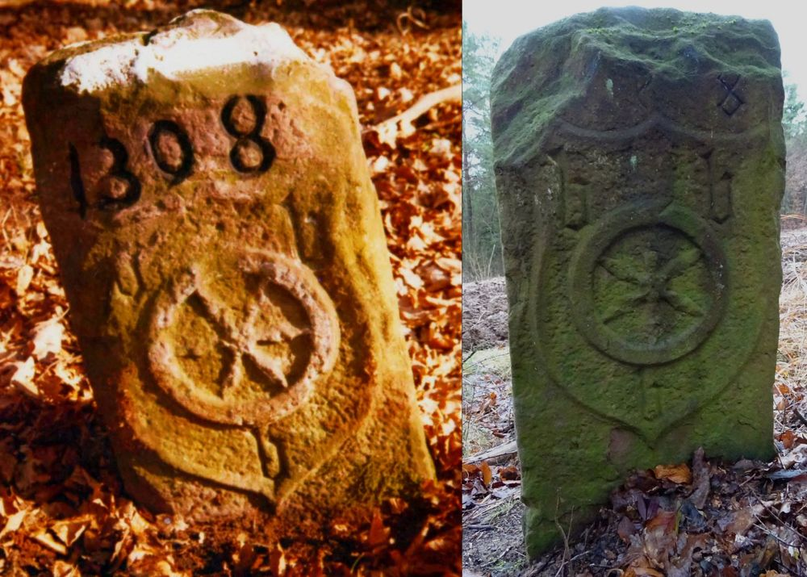
Links der Grenzstein mit Jahrzahl 1308 (Foto: Fotoarchiv Tauberfränkische Heimatfreunde), rechts ein Grenzstein aus dem Jahre 1508 (Foto: Hendrik Beierstettel)
Pahl bemerkt, dies sei die älteste Zahleninschrift von Tauberbischofsheim, und tatsächlich ist auf unserer Gemarkung wie auch in der Umgebung zumindest kein älterer datierter Grenzstein bekannt. Zwar notieren die bischemer Feldschieder bei ihrer Markungsbegehung im Jahre 1749 in unmittelbarer Abfolge zu „Pahls“ 1308er-Stein einen Stein mit der vermeintlichen Jahreszahl 1224, jedoch wird aus dem vorherigen Grenzbegehungsprotokoll aus dem Jahr 1724 deutlich, dass sich auch einmal die Grenzsteinprofis verlesen konnten: Der Stein wurde nämlich in jenem Jahr erst gesetzt und mit der entsprechenden Jahreszahl versehen. Die 7 wurde versehentlich als 2 gelesen.
Kann womöglich auch bei der 1308 ein Lesefehler vorliegen? Bei dem ersten noch existierenden Bischofsheimer Begehungsprotokoll aus dem Jahr 1569 wird der Stein vermutlich beschrieben, allerdings wird die eingehauene Jahreszahl nicht angegeben. In den Mitschrieben aller sechs noch auffindbaren, späteren bischofsheimer Grenzgänge zwischen 1608 und 1873 wird der Stein dann aber jedes Mal mit der eingemeißelten Jahreszahl 1308 gelistet. Auch die Grünsfelder Feldschieder haben regelmäßig ihre Gemarkungsgrenze umrundet. Von ihnen gibt es im Stadtarchiv Grünsfeld (Buch B 1) noch Protokolle aus den Jahren 1543, 1642, 1687 und 1706. Bei allen vier lässt sich der alte Märker anhand seiner Beschreibung, der seines Standorts und seines unverwechselbaren, jeweils zuvor genannten Nachbarsteins (Dreimärker Bischofsheim – Grünsfeld – Dittigheim) zuverlässig identifizieren; seine Jahreszahl wird aber nie notiert. Dafür werden den steilen Hang durch die Grünsfelder Tannen herunter am Rödersteingraben zwei bzw. sogar drei andere Grenzsteine aufgezählt, auf denen die Jahreszahl 1308 gestanden hätte. Auch diese Steine grenzten zur Bischofsheimer Markung ab. Wieso haben die büschemer Landschieder diese Steine nicht erwähnt?
Sowohl in den Grünsfelder als auch in den Bischofsheimer Begehungsprotokollen folgt auf 1308 erst einmal fast 100 Jahre lang kein weiterer datierter Stein. Auf bischemer Gemarkung folgen 1400 und 1406 zaghaft wieder einzelne datierte Steine. Aus dieser Zeit ist aber kein Stein mehr erhalten. Der älteste noch vorhandene datierte Stein steht auf der Grenze mit Königheim und ist aus dem Jahre 1474. Ihm widmet sich der nächste Artikel dieser Serie. Er unterscheidet sich in seiner Form und der Gestaltung der Inschrift deutlich vom 1308er-Stein. 34 Jahre später, im Jahr 1508, wurden dann gleich mehrere Steine auf der Tauberbischofsheimer Gemarkungsgrenze gesetzt, mit Jahreszahl und Mainzer Rad mit drei b in einem Wappenschild versehen. Diese Steine ähneln auffallend dem vermeintlichen Methusalem aus dem Jahr 1308. Wieso sollte der 1474 gesetzte Stein also derart aus der Reihe fallen? Ist der alte Stein vielleicht doch ein Stein der 1508er-Reihe, wurde seine 5 unsauber eingehauen und später dann als 3 erkannt? Einer dieser aus den Protokollen ersichtbaren Steine aus dem Jahr 1508 stand beim Dittwarer Heidenkessel. Von ihm sind heute nur noch Bruchstücke vorhanden. Auf einem steht die Jahreszahl, die Hunderterzahl wirkt wie ein Zwitter aus 5 und 3. Auch Steinmetze waren damals nicht unbedingt geübt in der Schrift, manche mögen gar Analphabeten gewesen sein.
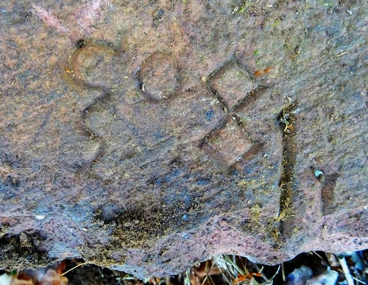
Bruchstück eines Grenzsteins aus dem Jahre 1508 mit eigenwilliger 5. Die 1 ist abgesplittert, rechts von der 8 ist eines der drei Bischofsheimer b zu sehen. Foto: Hendrik Beierstettel
Ein direkter Vergleich der beiden heute noch vollständig erhaltenen 1508er-Steine mit ihrem potenziell exakt 200 Jahre älteren Verwandten könnte vermutlich Klarheit bringen. Doch leider befindet sich der von Pahl beschriebene alte Stein nicht mehr an seinem angestammten Platz. Er ist wohl schon seit ein paar Jahrzehnten spurlos verschwunden. Womöglich wurde er vorsorglich entfernt, bevor der Truppenübungsplatz auf der Brachenleite in Betrieb genommen wurde, denn sein Standort war an dessen Randbereich. Leser, die wissen, wo sich der alte Stein heute befindet, mögen sich bitte beim Büschemer Grenzsteinbeauftragten melden (grenzstein@beierstettel.de; 09341-5113). Vielleicht kann durch eine Begutachtung das Rätsel seines wahren Alters dann endlich gelöst werden.
Von Hendrik Beierstettel · erschienen in den Fränkischen Nachrichten am 18. September 2024 · Folge 3 der Serie
Die Königheimer Gemarkung grenzt über eine Strecke von ungefähr 2,5km an die Tauberbischofsheimer. Die gemeinsame Grenze beginnt auf der Dittwarer Höhe oberhalb des Hangwaldes Hussenbach-Wiesenbach und endet im Rinderbach am Fuße des Stammberges. Auf der Dittwarer Höhe “übergibt” Dittwar die Grenze mit Tauberbischofsheim an Königheim, im Rinderbach übernimmt dann Dienstadt. An beiden Punkten treffen somit drei Gemarkungen aufeinander. Solche Stellen wurden schon vor vielen Jahrhunderten mit besonderen Steinen markiert, den sogenannten Dreimärkern. Dreimärker sind dreieckige Steine, jeder angrenzenden Gemarkung ist eine Seitenfläche der meist sehr großen Grenzsteine zugewiesen. Aus den Bischofsheimer Grenzbegehungsprotokollen ist zu entnehmen, dass an der Stelle, an der die Gemarkungen von Bischofsheim, Königheim und Dittwar aufeinander trafen, schon im Jahre 1474 ein Dreimärker gesetzt wurde. Er überdauerte viele Jahrhunderte, 1844 wurde aber schließlich ein neuer gesetzt. Er steht dort noch heute, vom Vorgänger fehlt jede Spur. Es wäre nicht ungewöhnlich, wenn er noch vor Ort im Waldboden, verborgen unter Laub und Erde schlummern würde.
Im selben Jahr, in welchem der alte Dreimärker gesetzt wurde, wurde auf der Gemarkungsgrenze zwischen Königheim und (Tauber-)Bischofsheim ein weiterer Grenzstein gesetzt: Ein Eckstein, wie die Landschieder in ihren Protokollen betonen. Je größer der Richtungswechsel des Grenzverlaufs an einer Stelle ist, desto wahrscheinlicher ist es, dass an diesem “Eck” schon sehr früh ein Stein gesetzt wurde. Am Auslauf des Bischofsheimer Gründles ins Brehmbachtal winkelt die aus dem Gründle herausziehende Gemarkungsgrenze rechtwinklig in Richtung Königheim ab. Dieser besondere Grenzpunkt wurde schon 1474, vor also genau 550 Jahren, mit einem derart mächtigen Grenzstein markiert, dass er die Jahrhunderte überstand und noch heute dort die Stellung hält. Vor zwei Jahren hätte ihm ein landwirtschaftliches Gerät dann aber fast den Garaus gemacht; er bekam einige Schrammen ab, geriet in Schieflage, wurde aber wieder aufgerichtet und fest im Boden verankert.
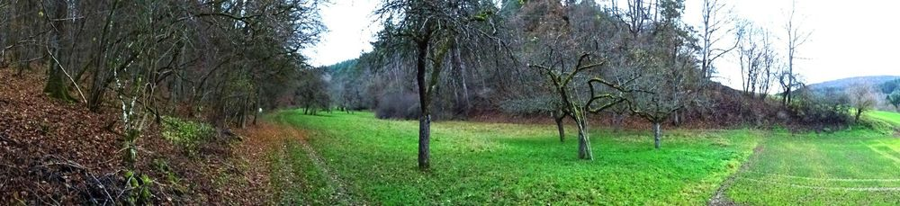
Blick aus dem Brehmbachtal ins Bischofsheimer Gründle. Foto: Hendrik Beierstettel
Seine Zerstörung wäre ein großer Verlust gewesen: Es handelt sich nicht nur um den ältesten datierten Grenzstein, der heute noch auf der Tauberbischofsheimer Gemarkungsgrenze steht, sondern auch hinsichtlich seines Aussehens um ein Unikat. Alle bearbeiteten Bischofsheimer Gemarkungsgrenzsteine bis Anfang des 18. Jahrhunderts und auch noch ein paar jüngere tragen auf Bischofsheimer Seite ein Wappenschild, in welchem sich ein Mainzer Rad befindet. Die Oberamtsstadt Bischofsheim gehörte bis zum Reichsdeputationshauptschluss im Jahre 1803 zum Erzstift Mainz. Um das Mainzer Rad herum waren auf den alten Grenzsteinen drei zunächst klein, später groß geschriebene b als Zeichen für Bischofsheim angeordnet. Auch unser über ein halbes Jahrtausend alter Stein trägt dieses Wappenschild mit Mainzer Rad. Anders als bei allen anderen Steinen ist hier das Wappenschild jedoch leicht schräg geneigt und hat oben einen kleinen Fortsatz, der an ein Fähnchen erinnert. Zudem findet man um das Wappenschild herum nur zwei b, die sind dafür jedoch außerordentlich groß und aufwändig gearbeitet. Das dritte b ist bei diesem Eckstein auf die schmale Seitenfläche “gerutscht”, die ebenfalls in Richtung Tauberbischofsheimer Gemarkung schaut. Das macht diesen Stein einmalig. Auf der breiten Königheimer Seitenfläche findet sich dagegen nur ein schlichtes K - ein deutlicher Hinweis, welche der beiden Gemeinden diesen imposanten Markstein finanziert hat und setzen ließ.
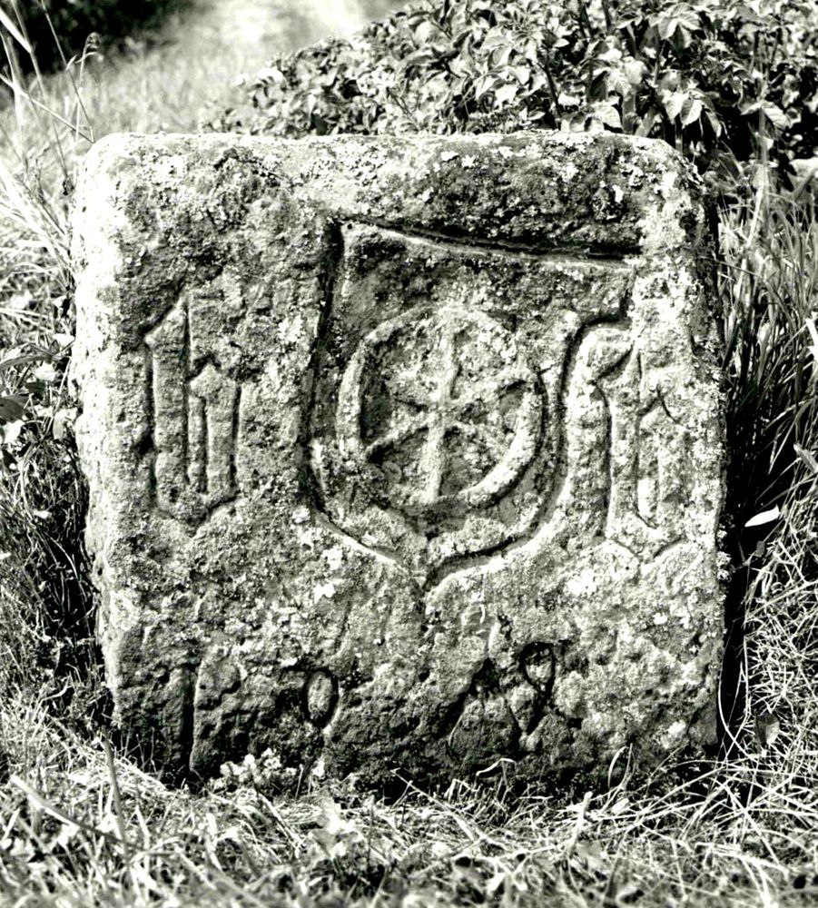
Ein Foto aus der ersten Hälfte des 20. Jahrhunderts vom Eckstein aus dem Jahr 1474. Foto: Archiv Tauberfränkische Heimatfreunde
Unter dem Wappenschild auf Bischofsheimer Seite schließlich ist das Jahr eingehauen, in welchem er gesetzt wurde. Den meisten Wanderern, die auf den großen Buntsandstein aufmerksam werden, wird sich sein Alter aber dennoch nicht sofort offenbaren: Zwar war in der zweiten Hälfte des 15. Jhd. großteils schon der Übergang von den römischen Zahlen zu den arabischen erfolgt, diese wurde teilweise aber noch deutlich anders als heute geschrieben. Das ist übrigens auch ein starker Hinweis, dass der in der vorherigen Folge dieser Artikelserie thematisierte alte Grenzstein tatsächlich nicht aus dem Jahr 1308 stammt, denn seine Jahreszahl ist schon moderner geschrieben, passt eher ins 16. Jahrhundert.
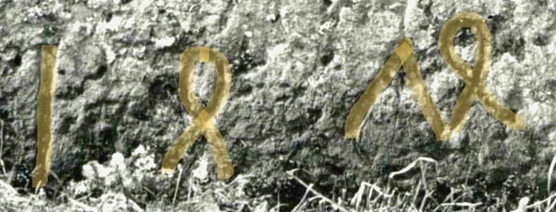
Die in alter Schreibweise eingehauene Jahreszahl 1474. Die Zahl wurde digital nachgezeichnet (bearbeiteter Ausschnitt des obigen Fotos).
Die Schreibweise der Zahl 1474 unseres Ecksteins im Brehmbachtal dagegen passt völlig in ihre Zeit: Die Eins ist ein einfacher Strich, wie ein großes I. Die beiden Vierer erinnern an eine 8, deren unterer Kreis nach unten hin offen ist. Wenn man diese seltsame Vier um ca. 60 Grad gegen den Uhrzeigersinn dreht, ist man der heutigen 4 schon sehr nahe. Und die Sieben schließlich erinnert mehr an ein Dach (^) als an eine Sieben. Dreht man diese alte Sieben nun aber um ca. 60 Grad im Uhrzeigersinn, wird einem klar, wie sich die Schreibweise der heutigen 7 entwickelt haben dürfte. Wer sich für die Zahlenschreibweisen Mitte des 15. bis Mitte des 16. Jahrhunderts genauer interessiert, findet auf www.suehnekreuz.de/zahlen.html einen guten Einstieg.
Von Hendrik Beierstettel · erschienen in den Fränkischen Nachrichten am 20. September 2024 · Folge 4 der Serie
Wenn man auf der Alten Straße von Tauberbischofsheim über den Brenner nach Großrinderfeld fährt, gelangt man oben auf der Höhe an den Großen Forst. Der Forst ist heute überwiegend Staatswald Baden-Württemberg und wird in einem späteren Artikel dieser Serie noch Thema sein. Links der Alten Straße, aus Tauberbischofsheim kommend, gibt es vom Beginn des Waldes bis zum ersten links abzweigenden Forstweg (1. Stellweg) einen anfangs 60, später bis zu 230m breiten Streifen Wald, der nicht zum Staatsforst gehört. Er ist heute zum Teil Tauberbischofsheimer Gemeindewald -auf Großrinderfelder Gemarkung, denn die Gemarkungsgrenze verläuft hier direkt am Waldrand- bzw. Privatwald. Dieser schmale Waldstreifen ist das Henkerslehen.
Henkerslehen gab es nicht nur bei uns, sondern vermutlich überall, wo es auch Richtplätze des Centgerichts -einer Art mittelalterlichen Verwaltungsbezirks- gab. Die Kosten für eine Hinrichtung waren nicht gering, alle daran beteiligten Amts- und Würdenträger wollten mit Speis und Trank versorgt werden, der Henker, der Centbote, der Centschreiber und andere Beteiligten waren zu entlohnen, ein Galgen zu bauen... So ersann man die Henkerslehen, um die Finanzierung des Centgerichts und die Durchführung der Strafen sicherzustellen. Dabei handelt es sich um Grundstücke im gemeindlichen bzw. hoheitlichen Besitz bzw. Verwaltung, die an in der Regel gesellschaftlich angesehene und wohlhabende Familien gegen eine Gebühr verpachtet (verliehen; Lehen) werden. Aus diesen Einnahmen wurden die Kosten der Hinrichtungen beglichen.
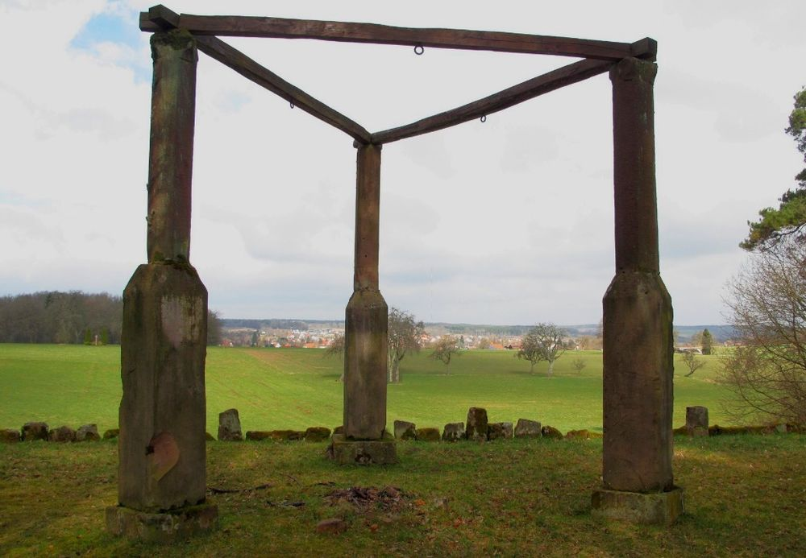
Der Mudauer Galgen. In Tauberbischofsheim stand der Galgen wenige hundert Meter oberhalb der Laurentiusbergkapelle. Foto: Hendrik Beierstettel
In Bischofsheim war zeitweise die Situation in der Cent, beim Centgericht kompliziert. Der Centgraf war gleichzeitig auch Schultheiß der Stadt Bischofsheim, also der Bürgermeister, wenn auch vom Bischof bestellt. Gericht und Verwaltung, Aufgaben der Cent und der Stadt Bischofsheim vermischten sich. Zudem war Bischofsheim eine Zeitlang vom Mainzer Bischof verpfändet. In dieser Zeit gab es eine gemeinsame Cent von Bischofsheim und Grünsfeld. Als Bischofsheim nach der Pfändung wieder in Mainzer Gesamtbesitz war, waren nicht mehr alle Zuständigkeiten klar. 1485 erließ Bischof Berthold Bestimmungen zur Bischofsheimer Stadtordnung, die auch das Henkerslehen betrafen. Er war der Meinung, dass Mainz, die Äcker, die Wiesen und andere Fläche des Henkerslehen gehörten und eine neue Ordnung nötig wäre.
In den Tauberbischofsheimer Landschieder-Protokollen ihrer Gemarkungsgrenzbegehungen wird das Henkerslehen stets genannt, schließlich reicht es ja an die Gemarkungsgrenze. Die Protokolle beginnen 1569 und enden 1872. Anfangs heißt es noch Henkerslehen, später Henklen und schließlich, heute Hänglein. Ein schönes Beispiel, wie sich Flurnamen im Laufe der Jahrhunderte abwandeln können. Und das ist eher die Regel als die Ausnahme. In der Heimbergsflur findet sich ebenfalls der Gewannname Hänglein. Diese Ackerflächen könnten also auch zum Henkerslehen gehört haben.
Der Forst war churmainzisches Hoheitsgebiet, umso wichtiger war es auch Bischofsheim also, das Henkerslehen als solches davon abzugrenzen. Es ging schließlich um Zuständigkeiten. Und so wurde das Henkerslehen bereits im Jahr 1490 mit Grenzsteinen markiert. Aus einem Großrinderfelder Gemarkungsumgehungs-Protokoll aus dem Jahr 1784 (GLA Karlsruhe 229 Nr. 35161 a) wissen wir, dass es mal acht solcher Henkerslehen-Grenzsteine gab. Drei davon sind bis jetzt wieder aufgetaucht. Einen davon findet man, wenn man in den den so beschilderten „1. Stellweg“ einbiegt. Nach ungefähr 200m, kurz bevor von ihm nach links ein erster Waldweg abzweigt, sieht man ca. 50 Meter tief links im Wald einen dieser Steine stehen. Diese Steine tragen nur ein b für Bischofsheim. Vermutlich für die Bischofsheimer Cent. Bischofsheimer Gemarkungsgrenzsteine aus dieser Zeit hatten stets 3 b. Und sie haben eine Jahreszahl: 1490. Und diese Zahl ist besonders.
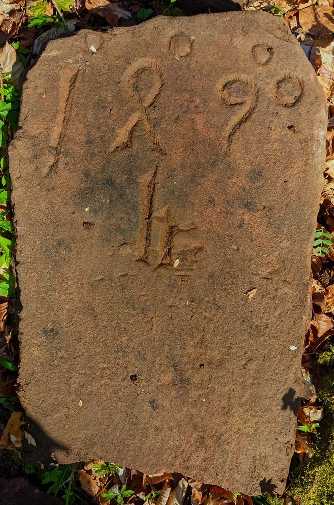
Bruchstück eines der Steine aus dem Jahr 1490, die das Henkerslehen begrenzten. Foto: Hendrik Beierstettel
Über der Zahl kann man kleine Kreise, wie ein hochgestelltes o, erkennen. Dieser Usus wurde von den römisch geschriebenen Zahlzeichen übernommen. Dort wurden die Endungs-o entweder jeweils nachgestellt oder mittig über die Tausender, Hunderter und die Minderzahl (Zehner und Einer) übergeschrieben. Zu transkribieren wäre folglich 1°4°90°, und zu lesen ist das Ganze als Millesimo quadringentesimo nonagesimo (bezogen auf das mitzudenken "anno", also "im Jahr 1490"). Mit Einführung der arabischen Zahlen geriet dies eigentlich außer Mode. Aber hier, in der Übergangsphase, wurden die Endungs-o noch verwendet. Führende Inschriftenforscher (Forschungsstelle Deutsche Inschriften an der Heidelberger Akademie der Wissenschaften) halten diese Steine deshalb für einmalig.
Von Hendrik Beierstettel · erschienen in den Fränkischen Nachrichten am 25. September 2024 · Folge 5 der Serie
Zwischen Külsheim und dem Kloster Bronnbach liegt der große Schönertswald. Ein großer Teil des Schönerts liegt auf Külsheimer, kleinere Flächen auf Dörlesberger bzw. Reicholzheimer Gemarkung. Und auch das Kloster Bronnbach hatte dort viel Waldbesitz. Für alle vier hatte der Wald große wirtschaft5liche Bedeutung: Er war nicht nur geteiltes Jagdrevier und wichtige Quelle für wertvolles Bauholz und Brennholz, auch das Vieh wurde zur Mast in den Wald getrieben. Von jeder Partei wurde peinlichst darauf geachtet, dass die anderen dabei nicht die festgelegten Grenzen überschritten. Natürlich kam es darüber immer wieder zu Streitigkeiten. Eine Akte im Staatsarchiv Wertheim (StaWt R-Lit. Br Nr.1116) dokumentiert bereits im Jahr 1225 Grenzstreitigkeiten zwischen der Stadt Külsheim und dem Kloster Bronnbach. Später werden die Dörlesberger beschuldigt, im Külsheimer Schönert Laub und Holz gesammelt zu haben, dann will Külsheim den Reicholzheimer verbieten, weiterhin das Vieh in ihren eigenen Wald zu treiben. Derlei Zwistigkeiten flammten bis ins 19. Jahrhundert immer wieder auf.
Es ist naheliegend, dass die Grenzen im Schönert frühzeitig sorgfältig versteint wurden, allerdings kam es hier immer wieder zu Sabotage-Akten: Anfangs kennzeichnete man die Grenzen, indem man meist großen, alten Bäumen Marken einschlug. Bei den regelmäßigen Grenzbegehungen wurden solche Lochbäume immer wieder umgehauen vorgefunden. Später setzte man immer mehr Grenzsteine. Manche verschwanden ganz, manche wurden ausgegraben, bei anderen hegte eine Partei den Verdacht, dass die Nachbargemeinde die Steine heimlich versetzt hatte, was die natürlich wiederum bestritt. Im Staatsarchiv Wertheim lagern zahllose Akten über derlei Streitigkeiten über den Schönertswald. Einige davon sind schon digitalisiert und online zugänglich (www2.landesarchiv-bw.de/ofs21).
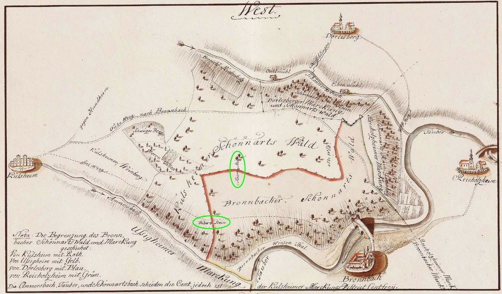
Karte vom Schönertswald mit Rosenstein und Biberstein, hier jeweils mit einem grünen Kreis markiert. Staatsarchiv Wertheim R-K Nr. 5904
Vermutlich wegen all dieser Auseinandersetzungen wurde es bald zur Gewohnheit, dass sich Külsheim und Bronnbach jährlich im Frühjahr im Schönert trafen, um die Waldbereiche gemeinsam abzulaufen. Dabei wurde zum Beispiel festgelegt, welches Holz geschlagen werden und wie weit das Vieh getrieben werden durfte. Von Külsheim nahmen meist Rentmeister und Ratsverwandte teil, aus Bronnbach kam der Bursierer des Klosters und auch der Dörlesberger Schultheiß wollte mitbestimmen. Der seit „undenkbaren Zeiten“ vereinbarte Treffpunkt war der Rosenstein. Er steht heute noch mitten im Schönert, auf der ehem. Gemarkungsgrenze zwischen Külsheim und Bronnbach (heute Külsheim und Reicholzheim). Der Rosenstein ist also ein sehr alter Grenzstein, der über seine Grenzfunktion hinaus eine bedeutende Funktion hatte. Gemäß einer alten Vereinbarung musste es Bronnbach zudem zähneknirschend erdulden, dass Külsheim beim Rosenstein im bronnbachischen Galgenhölzlein das Holz für seinen Galgen schlagen durfte.
Der Rosenstein hat auf seiner Oberseite ein Kreuz eingehauen, was bei sehr alten Grenzsteinen üblich war. Auf seinen Seitenflächen zeigt er aber keine Inschriften, die auf das jeweilige Hoheitsgebiet hinweisen. Leider hat er auch keine Jahreszahl. Drei Seitenflächen sind unbeschriftet, auch die beiden, die zum Külsheimer bzw. Bronnbacher Schönertswald hinzeigen. Nur die Seite, welche auf die Gemarkungsgrenze in Himmelsrichtung Bronnbach schaut, trägt ein Symbol: Das Relief einer Rosenblüte. Daher hat der Stein seinen Namen. Ob das Relief tatsächlich eine Rose abbilden soll, lässt sich nicht zweifelsfrei sagen, da es aber schon in den alten Akten und auf alten Karten so beschrieben bzw. der Stein so bezeichnet wird, bleibt es die plausibelste Erklärung.
Für was die Rose allerdings steht, bleibt unklar. Da die Rose Richtung Kloster schaut, drängt sich ein Bezug zum Kloster auf – die Rose als Symbol für die Gottesmutter Maria, für Glaube, Hoffnung und Liebe. Womöglich besteht eher ein Bezug zu den Herren von Rosenberg, ein Adelsgeschlecht, welches aus den Rittern von Uissigheim hervorgegangen ist. Im Amorsbachtal, nur ungefähr einen Kilometer vom Rosenstein entfernt, beginnt die Uissigheimer Gemarkung. Und außerhalb des Schönerts, auf Külsheimer Seite, bei der Mönchenstraße, gibt es die Rosenäcker.
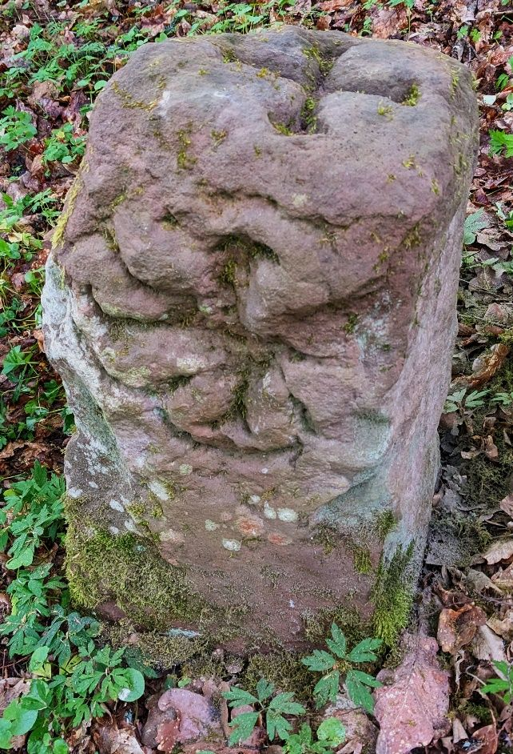
Der Rosenstein im Schönertswald. Foto: Hendrik Beierstettel
Dass das Kloster Bronnbach den Stein gesetzt hat, erscheint am plausibelsten, allein schon deshalb, weil sich auf den Grenzen der ehem. Bronnbacher Gemarkung weitere Grenzsteine mit besonderen Namen fanden: So gab es einen Kelchstein, einen Mönchstein und einen Lämmlesbaum, evtl. ein alter Lochbaum. Und sogar direkt im Schönert gab es zwei weitere Steine mit sonderbaren Namen: Auf der Bronnbacher Grenze zu reicholzheim, schräg oberhalb der tiefen Buchklinge war der Herrethstein oder auch Herresstein. Und an der Stelle, an welcher der alte Fußpfad von Bronnbach nach Külsheim die Grenze dieser beiden Orte kreuzt, stand der bereits 1499 erwähnte Biberstein (StaWt R-US 1499 August 19). Auf alten Karten im Staatsarchiv Wertheim (als Digitalisate online einsehbar) sind all diese Steine noch zu finden, draußen an ihrem angestammten Platz allerdings nicht mehr. Vom Biberstein, der seinen Namen vermutlich vom direkt unterhalb beginnenden, grabenähnlichen Biberloch hat (oder war es umgekehrt?) wissen wir, dass er vor genau 300 Jahren schon verschwunden war: In einem 1724 von Külsheim durchgeführten Gemarkungsgrenzgang heißt es: „Ein Stein im Bieberloch, soll versuncken sein am Weg. Das Loch noch zu sehen.“ (StaWt R-J 3 Nr. 67 und dazu Karte R-K Nr. 6073b).
Von Hendrik Beierstettel · erschienen in den Fränkischen Nachrichten am 1. Oktober 2024 · Folge 6 der Serie
Das Bischofsheimer Hospital entstand in der Mitte des 14. Jahrhunderts. Am 17. Februar 1354 teilt Kaiser Karl IV. dem Mainzer Erzbischof Gerlach von Nassau mit, dass Elsbeth Liebhartin, die Witwe des Bischofsheimer Bürgers Liebhart, alle ihre Güter zur Stiftung eines Hospitals in Bischofsheim verwendet habe. Ein Spital war damals nicht nur ein Krankenhaus für akut erkrankte Menschen, sondern auch ein Alten- und Pflegeheim, in dem alte und arbeitsunfähige Personen Unterkunft und Verpflegung auf Lebenszeit erhielten. Der Aufenthalt war freilich nicht umsonst: Die Pfründner mussten beim Eintritt ins Spital einen „Verpfründungsvertrag“ abschließen und Vermögenswerte in beträchtlicher Höhe stiften. So wuchs allmählich ein beträchtliches Spitalvermögen heran. Durch zusätzliche Schenkungen und Käufe mehrten sich die Güter der Stiftung sehr rasch. Bewirtschaftet wurde das Spitalgut vom Spitalmeister.
Schon kurz nach seiner Gründung, nämlich im Jahr 1360, hat das Spital Bischofsheim von den Brüdern Berenger und Heintze von Ubenkeim (Eubigheim) deren Wald Bischofswinden (Buschwinden) auf Eubigheimer Gemarkung gekauft. 1413 erwarb es dann auch noch den Wald Museloch und schließlich 1481 den Wald Newsslanden (Maschlanden), beide auf Brehmer Gemarkung. So kam es, dass das Tauberbischofsheimer Hospital Großgrundbesitzer im Ahornwald wurde.
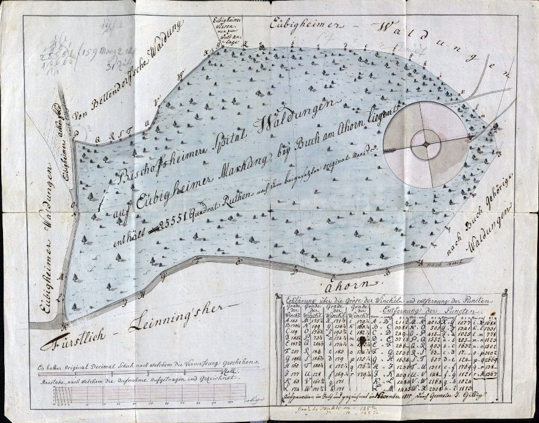
Karte von 1811: „Bischofsheimer Spital Waldungen auf Eubigheimer Marckung“. Staatsarchiv Wertheim K-LRA 50 K 8
Da Holz ein wertvolles Gut war, musste der Besitz natürlich kenntlich gemacht werden, besonders, wenn er sich so weit entfernt von Bischofsheim befand. Also ließ das Hospital seinen Besitz im Ahornwald versteinen. Eine solche Versteinung war stets keine einmalige Aktion, sondern ein stetiger Prozess, der sich über die Jahrhunderte hindurch zog. Auch Gemarkungsgrenzen waren anfangs nur sehr lose mit ein paar Ecksteinen markiert, erst im Laufe der Zeit wurden immer mehr Steine dazwischengesetzt. Daneben waren manche alten Grenzsteine irgendwann beschädigt oder gar nicht mehr auffindbar und mussten dann durch neue ersetzt werden. Aus einer Akte im Staatsarchiv Wertheim (StaWt. K-LRA 50 Nr. 541) geht hervor, dass das Spital im Ahornwald zum Beispiel in den Jahren 1607, 1810-16 und 1837 Steinsetzungen vornehmen ließ. Es gab keine die Zeit überdauernden strikten Vorgaben, wie ein bestimmter Grenzstein ganz konkret auszusehen hatte. Auch bei den Bischemer Spitalsteinen im Ahornwald variierten die Inschriften über die Zeit. Erst im Jahre 1956 verkaufte das Hospital seine Besitzungen im Ahornwald an das Land Baden-Württemberg.
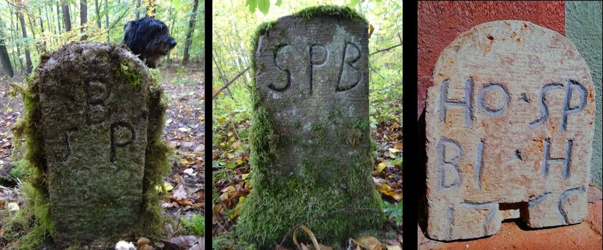
Drei Bischofsheimer Spitalsteine. Die Beschriftungen variierten über die Zeit hinweg. Fotos: Hendrik Beierstettel
Alte Karten vermitteln noch heute die Grenzen der ehemaligen Bischofsheimer Spitalwälder auf Eubigheimer und Brehmer Gemarkung. Und tatsächlich lassen sich mit Hilfe dieser alten Kartenwerke noch heute vereinzelte Bischofsheimer Spitalsteine im Ahornwald finden. Auf manchen ist B SP (Bischofsheim Spital) zu erkennen, auf anderen ist die Reihenfolge umgekehrt (SPB). Die Inschrift auf einem großen Dreimärker aus dem Jahr 1897, an dem der Spitalwald an zwei andere Gemarkungen stößt, lässt schließlich keinen Zweifel mehr zu: „N. 11 Gemarkung Brehmen Spitalwald Tb.Bischofsheim 1897“ ist hier in großen Lettern zu lesen. Der Rest eines weiteren Spitalsteins aus dem 18. Jhd. befindet sich heute im ehem. Armenspital in der Klostergasse. Ho.Sp Bi.H – Hospital Bischofsheim – ist auf ihm eingehauen. Welches der zahlreichen Grundstücke des Bischofsheimer Hospitals er einst markiert hatte, lässt sich heute nicht mehr feststellen.
Von Hendrik Beierstettel · erschienen in den Fränkischen Nachrichten am 4. November 2024 · Folge 7 der Serie
Eine der wichtigsten Fernstraßen vom Mittelalter bis in die Frühe Neuzeit verlief durch Tauberbischofsheim. Im Jahr 1240 wurde die Frankfurter Herbstmesse durch Kaiser Friedrich II. aus der Taufe gehoben, ungefähr 90 Jahre später privilegierte Kaiser Ludwig IV. dann auch die Frankfurter Frühjahrsmesse. Damit gab es jährlich zwei feste Messetermine in Frankfurt, die sehr rasch große Popularität erlangten. Aus ganz Europa strömten die Kaufleute zu den beiden Messen. Hauptrouten der Kaufmannszüge aus den großen süddeutschen Handelsstädten Augsburg, Regensburg und Nürnberg führten dabei entweder durch (Tauber-)Bischofsheim oder alternativ quer durch den unheimlichen Spessart. Während die Regensburger und Augsburger meist schon bei Bad Mergentheim bzw. Königshofen das Taubertal erreichten, zogen die Nürnberger Kaufleute häufig über Würzburg zur Übernachtungsstation Bischofsheim. Der weitere Verlauf ging dann für alle vorbei an Külsheim nach Miltenberg und von dort ungefähr dem Main folgend nach Frankfurt. Im Germanischen Nationalmuseum Nürnberg gibt es ein kurzes Dokument aus der ersten Hälfte des 18. Jhd., in welchem ein Nürnberger Kaufmann seine Reise zur Frankfurter Messe festgehalten hat (Inventar-Nr. HB 4227, Kapsel Nr. 1375). Von Nürnberg bis Frankfurt dauerte seine Reise insgesamt acht Tage. Am dritten Tag übernachtete er in Würzburg, am vierten in Bischofsheim. Für diesen Streckenabschnitt vermerkt er: “Würzburg nachts, zum Schwanen, dann unterwegs bis Bischofsheim. Von da bis dahin 4 Meilen gerechnet wird und kein Ort wo man bleiben kann. Und nachts Bischofsheim in der oberen Vorstadt.” In der oberen Vorstadt, also außerhalb der Stadtmauer, gab es z.B. die große Gastwirtschaft Zur Sonne (Sonnenplatz). Hier könnte er also Unterkunft gefunden haben. Der Streckenabschnitt Würzburg - Bischofsheim war mit 31km Länge und 300 zu bewältigenden Höhenmetern sehr strapaziös, vielleicht sogar die anstrengendste Tagesetappe auf der Reise.
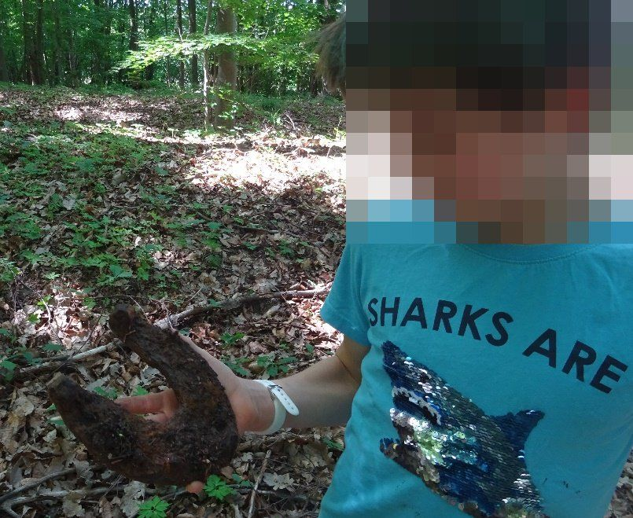
In den Hohlwegen der Geleitstraße beim Irtenberger Forsthaus kann man Hufeisen der mittelalterlichen Ochsenfuhrwerke entdecken. Foto: Hendrik Beierstettel
Die Kaufleute transportierten wertvolle Waren zur Frankfurter Messe, und die Gefahren von Überfällen waren damals groß. Im Staatsarchiv Würzburg gibt es eine dicke Akte, die Überfälle auf Kaufleute, die zur Frankfurter Messe reisten, protokolliert. Auch Götz von Berlichingen (1480-1562) war hin und wieder auf Raubzug. Um die Gefahr von Überfällen zu verringern, schlossen sich die Kaufleute zu großen Kaufmannszügen zusammen, die von den jeweils vor Ort regierenden Herrschaften gegen hohe Gebühr Geleitschutz gewährt bekamen.
Im Jahr 1789 wird so z.B. ein Nürnberger Kaufmannszug aus Würzburg mit 30 Würzburger Husaren zu Pferd Richtung Bischofsheim geleitet. An einem vereinbarten Treffpunkt, ungefähr an der Landesgrenze, übernahm dann für das Erzstift Mainz die Bischofsheimer Delegation den Schutz. Diese Stelle war zunächst das Kalte Loch bei Kist. Das Kalte Loch war ein breiter, sumpfiger Bach, der in dem Bereich nur an einer Furt, später einer Brücke überquert werden konnte. Reste des Kalten Lochs sind noch vorhanden; sie reichen allemal aus, um einen Eindruck zu vermitteln, warum diese markante Stelle als Übergabepunkt gewählt war. Man kann sie bestaunen, wenn man aus Tauberbischofsheim kommend den ersten Kreisverkehr direkt nach Kist (vor Unterquerung der A3) an der ersten Ausfahrt (Autobahnmeisterei) verlässt und dort parkt. 50-100m weiter in den Wald hinein trennt das letzte Überbleibsel des Kalten Lochs die A3 von der Autobahnmeisterei. Den Hang zur A3 ziehen tiefe Hohlwegreste hoch, die über Jahrhunderte von den Fuhrwerken in die Erde gegraben wurden.
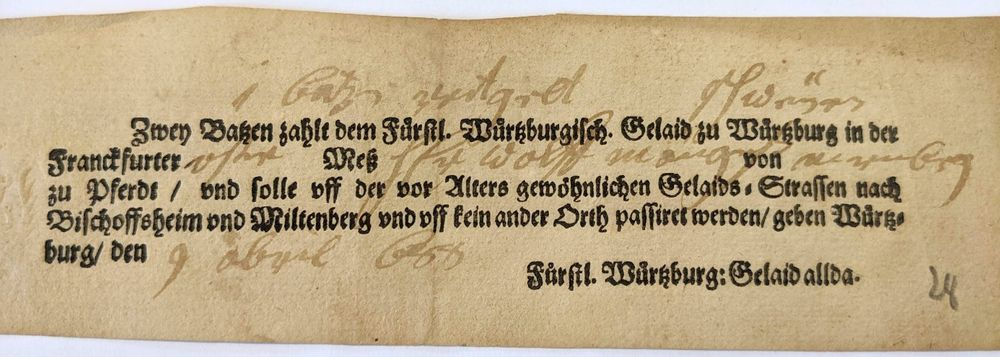
Ein Geleitzettel aus dem Jahr 1668: die Quittung für einen Nürnberger Kaufmann, dass er das Geld fürs Würzburger Geleit zur Frankfurter Ostermesse bezahlt hatte. Staatsarchiv Würzburg, Mainzer Jurisdiktionalbücher 13
Fürstbischof Julius Echter (1545-1617) war ein großer Freund der Jagd. Ihm war sehr daran gelegen, vom Guttenberger Forst bis zur Landesgrenze ein möglichst geschlossenes Waldrevier zu schaffen. Die Gelegenheit bot sich, da kleinere Weiler wie Bronn, Irtenberg oder Rohrensee wüst gefallen waren, selbst Kist war wohl zeitweise durch Abwanderung ausgestorben. In jahrelangen, oft hitzigen Verhandlungen mit Kurmainz gelang es Julius Echter schließlich, durch Tausch von Waldarealen und die Verlegung der Landesgrenze an ihre heutige Stelle in der Nähe des Waldrands beim Irtenberger Forsthaus seinen Wald, sein fürstliches Jagdgebiet zu schließen. Dafür trat er 1583 sogar jegliche vogteiliche Rechte an den Ortschaften Großrinderfeld und Königheim an Kurmainz ab, ein sehr hoher Preis, wie seine Beamten selbst bemerkten.
Die Übergabe des Geleits rückte nun vom Kalten Loch zur heutigen Landesgrenze. Hier kreuzte eine andere wichtige Fernstraße die von Würzburg nach Bischofsheim ziehende Geleitstraße: Aus dem Gau kommend über Kleinrinderfeld verlief hier einst die Weinstraße Richtung Altertheim, vorbei an Neubrunn nach Wertheim bzw. zur ehem. bedeutenden Mainfurt bei Urphar. (Weinstraßen gab es viele, ihr Name leitet sich nicht vom Wein, sondern vom mhd. Wort woin für Wagen ab. Es waren also mit Wagen befahrbare Straßen.) An der Kreuzung dieser beiden großen Straßen sollte die Geleitübergabe fortan erfolgen. Man findet in diesem Bereich -aus Gerchsheim kommend rechts der Landstraße im Wald zwischen der Abzweigung nach Altertheim und dem Irtenberger Forsthaus- noch heute zahlreiche Hohlwegspuren der Geleitstraße. Und entlang der Landesgrenze kann man noch gut sichtbar der Weinstraße folgen, bis die A3 sie jäh durchschneidet.
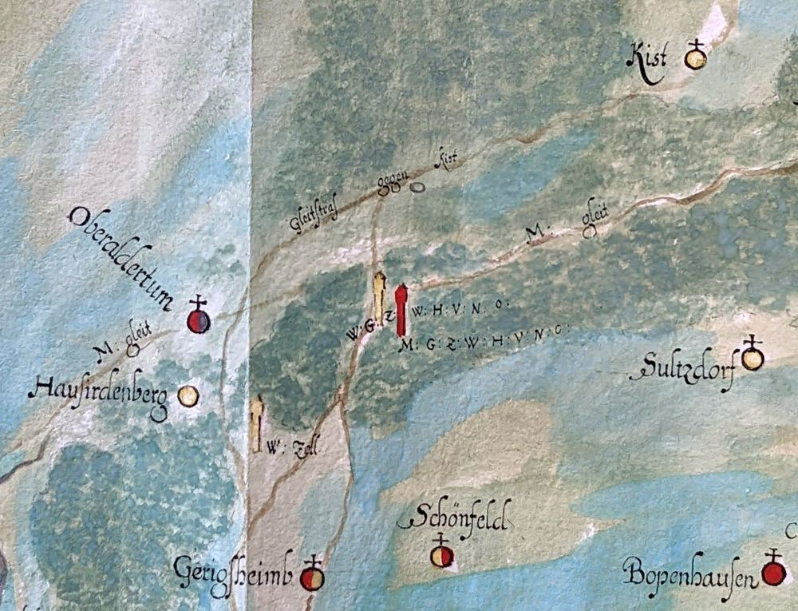
Die Geleitstraße zwischen Kist und Gerchsheim mit einem Würzburger Zollstock und den beiden Hoheitssäulen auf einer Karte aus dem Jahr 1668. Staatsarchiv Würzburg, Mainzer Jurisdiktionalbücher 13
Die oben bereits erwähnte Geleitübergabe im Jahr 1789 löste beim Würzburger Hauptmann indes einen Tobsuchtsanfalls aus, und er beschimpfte den bischofsheimer Centgraf, welcher das kurmainzische Geleit anführte, wüst: Er fühlte sich durch den Auftritt der Bischofsheimer Geleitmannschaft in seiner Soldatenehre verletzt: Den 30 Würzburger Husaren zu Pferd standen neben dem berittenen bischofsheimer Centgraf lediglich 20 Mann zu Fuß des “Bischofsheimer Jägercorps” gegenüber. Dem noch nicht genug. Kamen doch die Würzburger mit 30 fürstbischöflichen Reitern in voller Montur, entpuppte sich das Bischofsheimer Jägercorps als ein zusammengewürfelter Haufen Zivilisten. Bischofsheim hatte seine Gastwirte als Geleitschutz aufgeboten. Diese nahmen den Job wohl gerne an, konnten sie doch so auf dem langen Heimweg die Gelegenheit nutzen, bei den Nürnberger Kaufleuten emsig für ihre Gastwirtschaft als Übernachtungsstation zu werben. Der Hinmarsch zur Übergabestelle muss allerdings eine feucht-fröhliche Angelegenheit gewesen sein, denn die bischofsheimer Wirte trafen laut Würzburger Hauptmann in einem erbärmlichen Zustand ein. In einem anderen Jahr beklagten sich sogar einmal einige Nürnberger Kaufleute in Mainz, dass die bischofsheimer Geleitmannschaft in einem derart desolaten, ja desorientierten Zustand gewesen sei, dass sie anstatt auf der gut ausgebauten neuen Chaussee auf der alten, kaum mehr zu befahrenen Route nach Bischofsheim geleitete. Schade, dass es damals noch nicht die heutige Technik gab. Filmaufnahmen solcher bischofsheimer Geleitzüge wären sicherlich mediale Hits geworden…
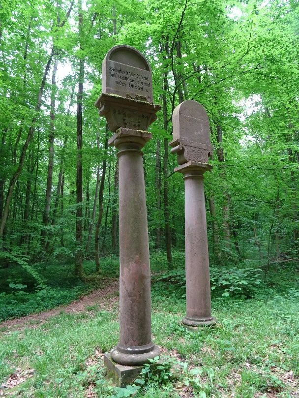
Die beiden Hoheitssäulen an der Weinstraße im Irtenberger Forst. Foto: Hendrik Beierstettel
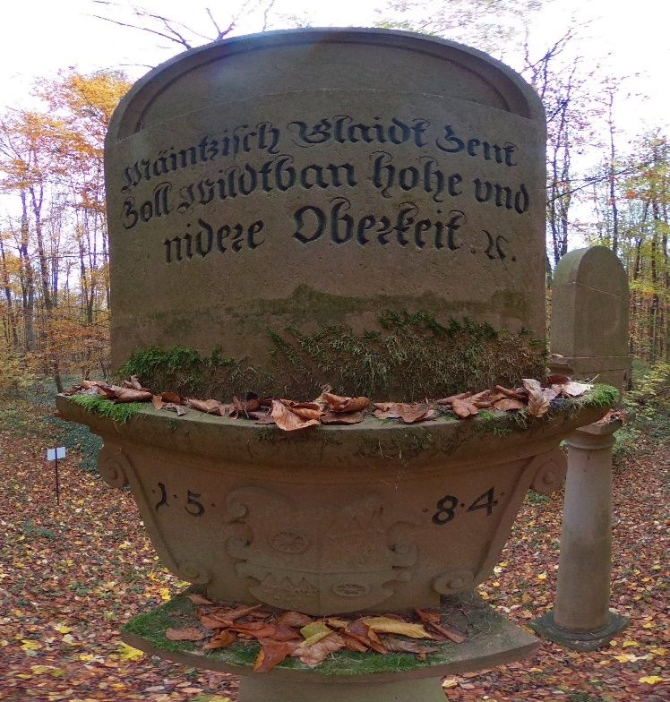
Die Inschrift auf der Mainzer Säule. Foto: Hendrik Beierstettel
Vielleicht auch aufgrund solcher Erfahrungen einigte sich Erzbischof Julius Echter mit seinem Mainzer Gegenüber Wolfgang von Dalberg, die Stelle der Geleitübergabe mit zwei hoheitlichen Säulen gut sichtbar zu markieren. Die beiden über drei Meter hohen Säulen wurden im Bereich der Kreuzung der Geleitstraße mit der Weinstraße im Jahr 1584 errichtet, und am 30.März 1585 wurde schließlich auch vertraglich festgehalten, was auf beiden Säulen eingemeißelt auch zu lesen war: Das gesamte Revier hinter den Säulen und damit hinter der Weinstraße in Richtung Würzburg stand allein Würzburg zu. Nur Würzburg durfte hier Zoll erheben, Geleit ausüben und -für Echter vermutliche der wichtigste Punkt- jagen. Auf der anderen Seite der Weinstraße in Richtung Gerchsheim lagen hingegen all diese Rechte bei Kurmainz. Die beiden Hoheitssäulen, eine für Kurmainz, die andere für Würzburg, stehen noch heute hier im Irtenberger Wald: Gegenüber der Abzweigung der Straße nach Altertheim weist ein kleines unscheinbares weißes Schildchen den Weg zu Ihnen. Folgt man ihm, läuft man auf der alten Weinstraße und erreicht nach ca. 200m die imposanten Säulen. Eine Infotafel vor Ort erläutert die Inschriften und noch weitere interessante Details.
(Quellen neben den im Text genannten: Staatsarchiv Würzburg, Standbücher 756, 760 und 789)